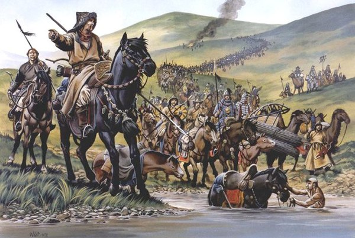

В последнем выпуске Мамай убегал в степи.
Бежать пришлось далеко — почти до Крыма. Именно там его все еще знали и любили, хотя любовь эта в силу понятных причин начинала быстро слабеть. Ситуацию серьезно усугубляло отсутствие у Мамая нового претендента на престол. То есть, если раньше он вполне мог выступать в роли наставника и попечителя законного хана, то теперь, когда тот кормил ворон где-то около Дона, в глазах окружающих татар Мамай выглядел не только лузером, но еще и, выражаясь современным языком, командиром незаконного бандформирования и злостным мятежником против законной власти в лице добравшегося-таки до Сарая Тохтамыша.

Поэтому, хоть бывшему ментору молодых ханов и удалось собрать войска, смотрели на него в Крыму косо. Даже старые друзья генуэзцы, то и дело бормоча свои вежливые "Mi scusi!", выразительными жестами давали понять, что особых дел с Мамаем иметь не хотят — пусть, мол, зайдет как-нибудь потом. Крайне раздраженный таким поворотом дел, пожилой монгол, скрипя зубами, помчался обратно на север — раздавать всем обидчикам по шее. Неизвестно, с кого должна была начаться бесплатная раздача: может быть, с празднующего Дмитрия, может быть, с несколько офонаревшего от сарайного счастья Тохтамыша — в любом случае Мамай никуда особо не дошел.
Тохтамыш, взяв Сарай, на краткое время получил серьезный бонус к интеллекту и немедленно взялся творить умные вещи. Сперва встретил Мамая на подступах к более-менее обжитым местам. Построил свое войско, вежливо подождал, пока построится противник. После чего вышел и сообщил всем собравшимся, что он, Тохтамыш, не просто какой-то хрен с горы, а потомок Чингисхана, между прочим. А вот этот ваш Мамай — непонятно кто и личность явно подозрительная. Крымское войско послушало, почесало затылки, после чего практически в полном составе перешло на сторону злорадно скалящегося Тохтамыша. Мамая снова спасло заднее чутье: где-то в начале речи допетрив, что в чем-то молодой южанин прав, заслуженный интриган развернулся и снова понесся в Крым — уже без амбициозных планов, стало не до них.
До Крыма Мамай добежал, но особой радости ему это не доставило. Тохтамыш, пользуясь временным озарением, сразу после бескровно выигранной битвы объявил всей степи, что Мамай — лох и редиска, поэтому если его кто прирежет — будет молодец, причем богатый молодец. А если кто приютит — тот сам дурак.
Поэтому старому монголу не то что помогать — его и на порог после таких заявлений пускать не хотели. Итальянцы заперли ворота прямо перед носом, причем от былой вежливости не осталось и следа. Мамай попробовал потыкаться в другие поселения, но тщетно — вскоре его прирезали во славу нового хана. Так закончилась история хитрого и пронырливого интригана.
К сожалению, а может быть, и к счастью, на этом гениальность Тохтамыша пропала так же внезапно, как и появилась, и он снова перешел к старым методам ведения действий. Воцарившись в Сарае и разобравшись с Мамаем, молодой хан немедленно связался с Русью, чтобы сообщить, кто тут теперь главный, а еще намекнуть, что платить дань — древняя и хорошая традиция, кою не стоит прерывать из-за каких-то там.
Русские в целом намек поняли и выслали обратное посольство, с подарками и поздравлениями. Но вот дани не прислали вообще. Да и Донской, решив, что раз старому и прожженному Мамаю он накостылял, то какого-то юнца вообще порвет на тряпки, за ярлыком на княжение не поехал. Дескать, без сопливых разберемся.
Тохтамыш, проведший последние годы своей жизни в непрекращающейся борьбе с комплексом неполноценности, такого вынести не мог. И над Москвой снова стали сгущаться тучи.
Насколько они сгустились, и была ли это гроза или так — легкая морось, вы узнаете в следующем выпуске.